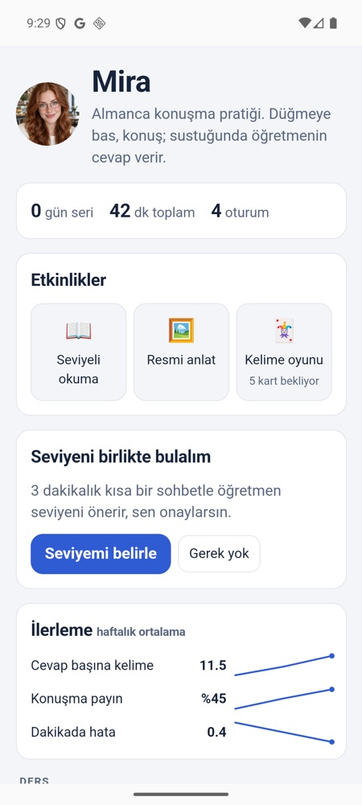

Mira
Ücretsiz indir
Mira
Ücretsiz indir
Mira
Ücretsiz indir
Mira
Ücretsiz indir
Mira telefonunda seninle sesli sohbet eder, hatanı o an düzeltir, takıldığında ipucu verir. İngilizce, Almanca, Fransızca, İspanyolca, İtalyanca.

Kafe, seyahat, iş görüşmesi ya da serbest sohbet. Mira ilk soruyu sorar.
Cevabını yüksek sesle söyle. Sustuğunda Mira seni dinlemeyi bırakır.
Yanlış cümlenin doğrusu ve kısa Türkçe açıklaması belirir.
Mira cevap verir ve yeni bir soru sorar; gerçek bir konuşma gibi.
Ne diyeceğini bilemediğinde iki örnek başlangıç cümlesi alırsın.
Puanın, en sık hatan, yeni kelimelerin ve gün serin.
Ders ezberi değil, konuşma alışkanlığı. Sohbetin yanında seviyeli okuma, resim anlatma ve kelime oyunlarıyla öğrendiğini pekiştirirsin.
İlk cümleni bugün kur. Yanlış olsa da olur; düzeltmek Mira'nın işi.
Prototip: mağaza bağlantıları yayından sonra eklenecek. Cihaz içi yapay zeka destekli telefon gerekir. Mira bir yapay zekadır ve hata yapabilir; öğretmen yüzü yapay zekayla üretilmiştir.